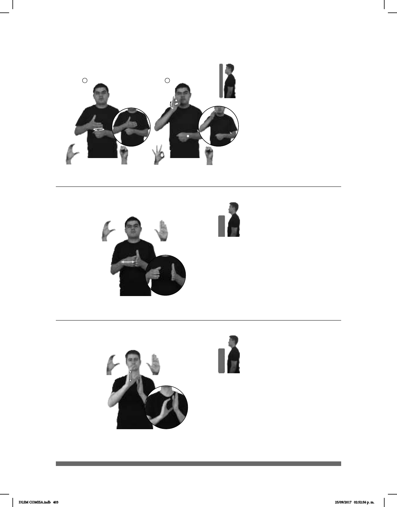

403
1
2
Seña: SC: I. y II. SB
I. MD C.1 MB S.1; II.
I. MD palma hacia la
izquierda. MB palma hacia adentro; II.
Palma hacia la izquierda.
I. A la altura del pecho. MD
sobre MB; II. MD a la altura de la boca.
MB a la altura del abdomen.
I. MD se mueve
formando círculos; II. MD la muñeca
se mueve formando un arco hacia el
frente.
sust.f. Establecimiento
donde se sirve principalmente café y
otras bebidas, así como postres o
alimentos ligeros.
(C-22)
CAFETERÍA pos-MI AMIGO pro-DOS-DE-NOSOTROS IR
Mi amigo y yo iremos a la cafetería.
Seña: SB
MD C.1, MB
B-P.2
MD y MB a la altura
del pecho.
MD palma hacia la
izquierda. MB palma hacia la derecha.
La MD golpea la MB
en línea recta repetidamente.
sust. f. Recipiente de
cartón, de madera, de metal, etc.,
generalmente con tapa, que sirve para
guardar y transportar cosas.
(C-23) Caja
pro-YO TENER TRES CAJA ADENTRO ZAPATO CAMA
abajo
Tengo tres cajas de zapatos bajo mi cama.
(C-24)
Seña: SB
MD C.1, MB B-P.2
MD palma hacia la
izquierda. MB palma hacia la derecha.
MD de la
punta de los dedos a la muñeca de la
MB, MB a la altura del pecho.
MD recto repetidamente.
sust. m. Sistema de
medición del tiempo que lo divide en
periodos regulares (años, meses,
semanas, días), a partir de criterios
fundamentalmente astronómicos.
pos-SU #SEP CALENDARIO AGOSTO TERMINAR
El calendario de la SEP termina en agosto.
DLSM COMISA.indb 403 25/09/2017 02:52:56 p. m.